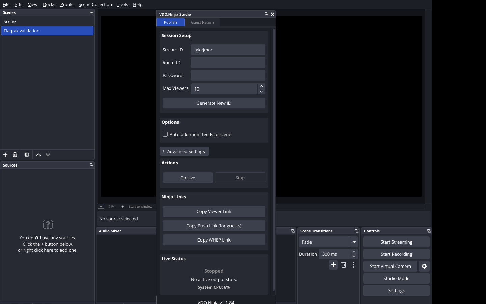

Linux · x86-64 · OBS from Flathub
Keep OBS. Add VDO.Ninja.
You can keep your Flatpak installation. Use our Flatpak bundle to add the plugin.
Available as a downloadable plugin bundle. No pacman/native OBS installation is required.
1. Close OBS and update it
flatpak update com.obsproject.StudioThis bundle targets current Flathub stable OBS: OBS 33.0.1 with the Freedesktop 26.08 runtime. It is separate from the native Ubuntu archive.
2. Install the plugin bundle
Download obs-vdoninja-linux-x86_64.flatpak from the release assets:
https://github.com/steveseguin/ninja-obs-plugin/releases/latest
Open Terminal in the download folder and run:
flatpak install --user ./obs-vdoninja-linux-x86_64.flatpak3. Open OBS
flatpak run com.obsproject.StudioChoose Docks → VDO.Ninja Studio to publish video or set up a guest return. To receive a guest, add a VDO.Ninja source.
You can also open Studio from the Tools menu.

Updates and removal
This is a downloadable bundle, not a Flathub listing. For plugin updates, download the newer bundle and install it with the same command. Updating OBS alone does not update this plugin.
To remove only the plugin:
flatpak uninstall --user com.obsproject.Studio.Plugin.VDONinjaIf the plugin does not appear
Restart OBS after installation. Check that you opened the Flatpak version, then collect these details with your OBS log:
flatpak info com.obsproject.Studio
flatpak info --user com.obsproject.Studio.Plugin.VDONinja
uname -mSupport: https://github.com/steveseguin/ninja-obs-plugin/issues